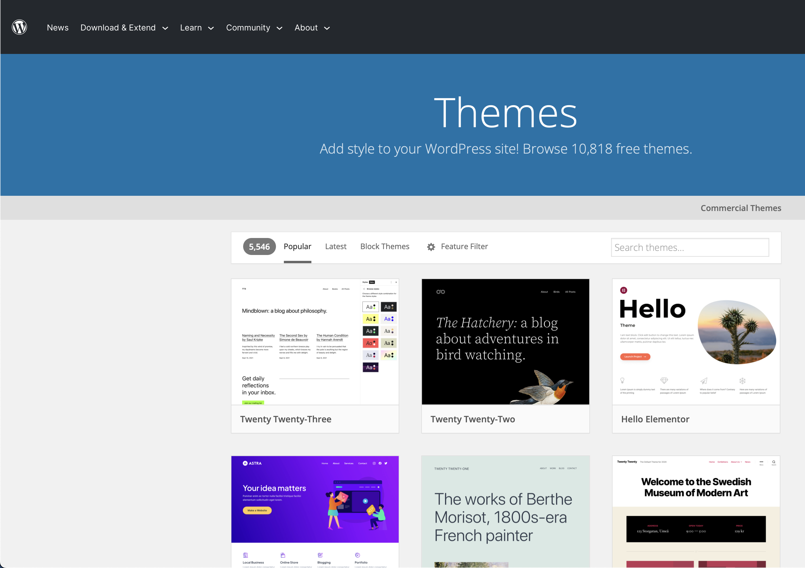

About
Web Prototyping, Design & Development
Founder D.J. Cerruti is a Certified Web Professional, having excelled in web fundamentals, accessibility and ux design, computer illustration, digital imaging, digital video and audio production, ecommerce, and web production management.
- Web design & content creation
- Website wireframes, mockups, & rapid prototyping
- WordPress development & customization
- Search engine optimization and marketing
Web Design & Content Creation
In developing your website, DJC Design uses the latest standards of HTML 5  , CSS 3
, CSS 3  , JavaScript
, JavaScript  , and other web technologies.
, and other web technologies.
By combining our expertise in content writing and creation with an assessment of your business goals, we can create a website that will enhance your business presence.
Website Wireframes & Mockups, Rapid Prototyping
Website features, such as image galleries, carousels, and data tables, along with the user interface, can require extensive time to plan, create, and sustain. Through wireframes, mockups, and rapid prototyping, we can quickly visualize and experience the look and feel of a website and its features.
WordPress Development & Customization
What if your business needs to periodically update or add new content to its site? WordPress allows you as the site administrator the ease, flexibility, and control to ensure your content is always up to date, without the hassle of hiring outside help.
DJC Design can develop your site on WordPress, yet customize it to give it a vibe that's attractive and distinctive.
Search Engine Optimization & Marketing
Whether marketing locally or more toward a global outreach, a website should target as many users and potential customers as possible. Search engine optimization (SEO) ensures your site's content appears early in the results of search inquiries. Using SEO techniques, DJC Web Design tailors your site's headlines and supporting content, along with its keywords and important meta information, so that your business is shown at the forefront and its brand marketed and recognized across the web.
Digital Asset Creation
- Logo design—logotypes, wordmarks, and taglines
- Digital imaging
- Computer illustration & design
- Digital video production
Logo Design
A company logo needs to be versatile, so it can be cast not only on business cards and letterhead, but also on mugs, T-shirts, and billboards.
We accomplish this by using scalable vector graphics to render the logo, saving it as a master .svg file that you'll have ready to establish and maintain your company's brand—anytime, anywhere, and on anything.
Digital Imaging
With digital imaging tools we can create, retouch, and enhance digital photos and artwork and their composites; draw and paint digital artwork; and create compelling web graphics.
Computer Illustration & Design
DJC Design uses vector-based computer design technology to create technical illustrations, web layouts, and an assortment of web graphics for your website.
Digital Video & Audio Production
Visuals and audio are useful in creating a story about your business that will connect with potential customers, leaving them a more lasting impression of how you can be of service.
DJC Design has the tools and expertise to create quality video and audio productions that will enhance your message and presence on the web.